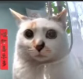

Mrs. Kirby (黑鼻头, "Black Nose Tip") is a common visitor to the Happy Canteen feeding station, known for her cute face and distinct markings that look like Kirby. She is also known for being the most dominant cat, picking fights with everyone including Mr. Fresh himself, resulting in her having a "Queen" status.
